Seguici su:

Questa è la classica foto da “addominali scolpiti” e quando parliamo di addominali scolpiti è facile cadere nell’errore comune secondo cui esistono addominali alti e addominali bassi.
Infatti ci è una convinzione abbastanza diffusa secondo cui gli addominali sono suddivisi così:
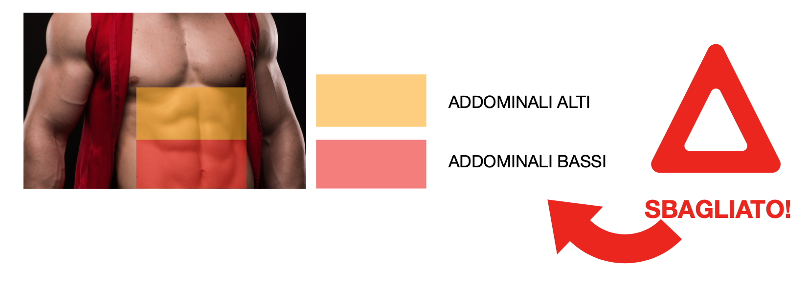
In realtà la cosiddetta “tartaruga” (o addominale scolpito) è un unico muscolo e si chiama retto dell’addome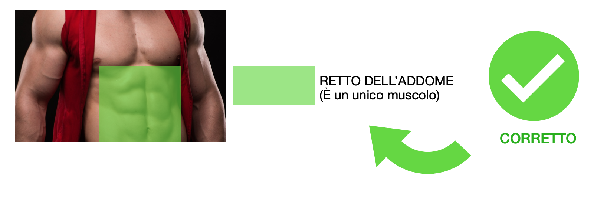
In altri termini quando alleniamo gli “addominali”, le fibre del "retto dell’addome" si attivano TUTTE insieme.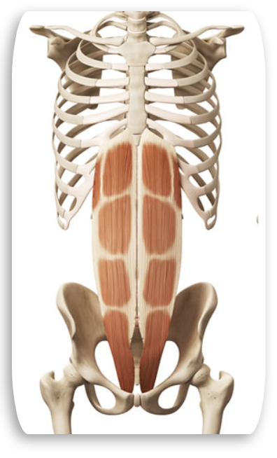
Quello che devi sapere è che il RETTO DELL’ADDOME è solo uno dei vari muscoli addominali. Esistono, cioè, altri muscoli che per la loro posizione e/o per la loro funzione possono essere classificati come muscoli addominali. Vediamo subito i principali: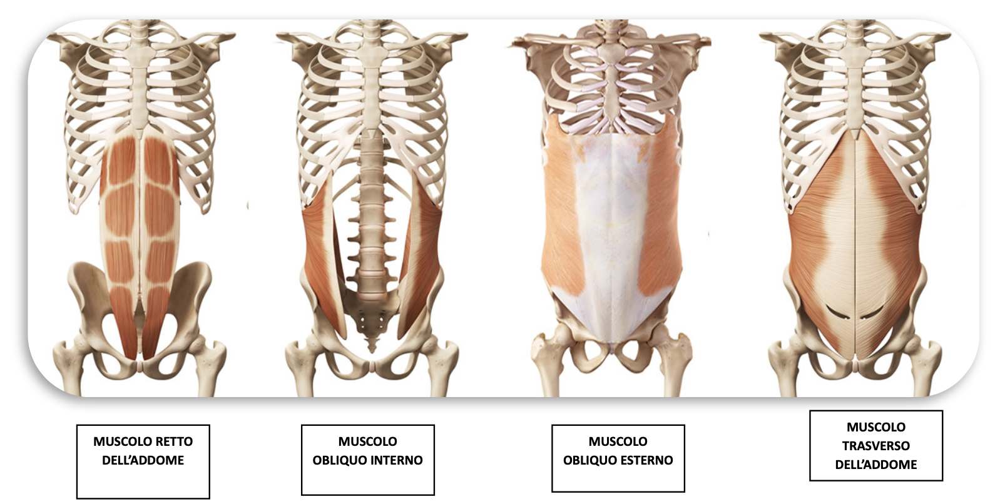
Questi sono anche detti muscoli della parete anterolaterali (perché appunto considerando l’addome si trovano davanti e di lato). Ma non finiscono qui. Ce ne sono altri: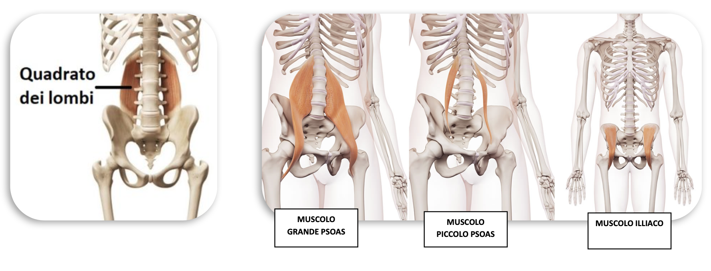
Questi sono anche detti muscoli della parete addominale posteriore (perché appunto rispetto agli altri sono posizionati posteriormente come puoi ben notare nelle foto).
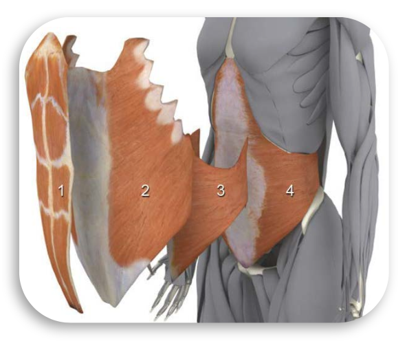
Visti da una prospettiva diversa, si può ben notare come i muscoli della parete addominale anterolaterali, vadano a formare una sorta di cintura anatomica naturale intorno all’addome.
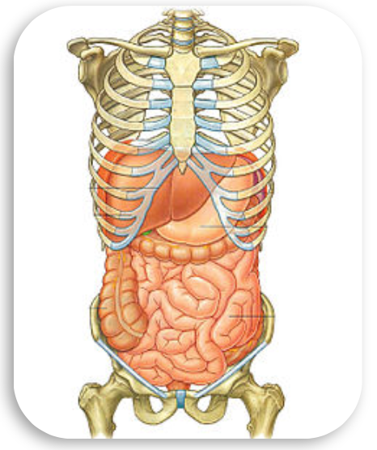
All’interno di questa cintura è racchiusa la cosiddetta cavità addominale dove risiedono organi come l'intestino, lo stomaco, il fegato, ecc... I muscoli addominali, infatti, sono importanti non solo per la loro funzione stabilizzatrice sulla postura, ma anche per la protezione che offrono a tali organi.CURIOSITA'
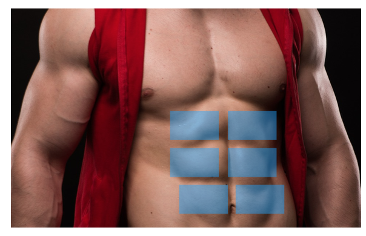
Gli addominali sono anche muscoli respiratori e la cavità addominale è separata dal torace grazie al diaframma. Per evitare che il movimento del diaframma ostacoli l'esecuzione di un esercizio addominale, bisogna espirare (buttar fuori l’aria) profondamente in fase di massima contrazione
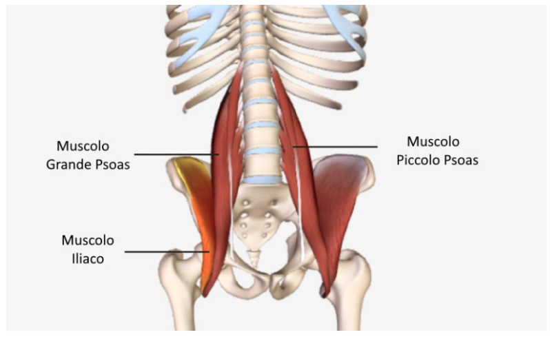
Prima di passare a qualche consiglio pratico di allenamento è bene sottolineare l’importanza dei muscoli della parete addominale posteriori, in particolare dell’ileopsoas. Questo muscolo è meglio noto per la sua funzione di flessore dell’anca. Attenzione adesso: è importantissimo sapere che molti esercizi promossi come "esercizi per addominali" in realtà attivano maggiormente i flessori dell'anca rispetto agli addominali. Al fine di isolare gli addominali, quindi, è necessario ridurre al minimo il coinvolgimento dei flessori dell’anca. Vedremo tra poco alcuni esempi pratici.Bene! Ricapitolando abbiamo compreso che esistono più muscoli addominali e che quando pensiamo agli addominali scolpiti in realtà ci stiamo riferendo al cosiddetto RETTO DELL’ADDOME che NON si suddivide in “addominali bassi” e “addominali alti” ma è un unico muscolo. Inoltre abbiamo compreso che quando alleniamo gli addominali entrano in gioco determinati muscoli, come l’ileo-psoas, che possono determinare la corretta (o scorretta) esecuzione di un esercizio per l’addome.
Qui di seguito forniremo alcuni esempi di esercizi che interessano i nostri addominali. Come abbiamo oramai compreso, il classico risultato estetico dell’allenamento, ovvero la nostra tartaruga, è la conseguenza dell’allenamento del retto dell’addome. Esistono esercizi di intensità maggiore che permettono un maggior sviluppo delle fibre muscolari ?????? , ma ricorda che la contrazione interessa sempre tutto il muscolo (retto dell’addome): non esistono esercizi che facciano lavorare esclusivamente gli addominali inferiori o soltanto quelli superiori (non esistono addominali alti o addominali bassi: il retto dell’addome è un unico muscolo). Inoltre è bene tenere sempre in considerazione che l'allenamento degli addominali coinvolge la schiena, motivo per cui ogni esercizio va eseguito con un movimento lento e controllato, prestando molta attenzione alla postura.
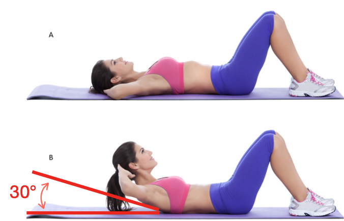
Nel prossio paragrafo affronteremo un importantissimo tema da tenere in considerazione nell'allenamento per gli addominali.
Come abbiamo precedentemente accennato, molti esercizi promossi come esercizi per gli addominali, in realtà coinvolgono principalmente i flessori dell’anca come l’ileo-psoas. E’ importantissimo conoscere questo aspetto talvolta sottovalutato perché oltre a poter fare la differenza in termini di allenamento degli addominali previene al tempo eventuali danni alla schiena.
Quello che vedete nell’immagine di fianco è il cosiddetto esercizio del sit-in. In questo tipo di esercizio c’è una grossa attivazione dei flessori dell'anca , soprattutto quando viene eseguito con qualsiasi tipo di ausilio che tenga i piedi premuti a terra. In questo caso il coinvolgimento principale dei flessori dell’anca può causare l'abbassamento della parte bassa della schiena. Potrebbe rappresentare, pertanto, una delle cause di mal di schiena soprattutto se si dispone di muscoli addominali deboli. Ecco perchè il sit-in completo non è sempre raccomandato.
In alternativa si può optare per un classico crunch a terra: è sufficiente sollevare il tronco di circa 30° (angolo facile da individuare perché rappresenta il punto in cui iniziano a staccarsi le punte scapolari da terra). Da questo angolo in poi, infatti, qualsiasi altro movimento è provocato principalmente dai muscoli flessori di coscia. Considera che un eccessivo allenamento dell’ileo-psoas può causare fastidiose lombalgie.
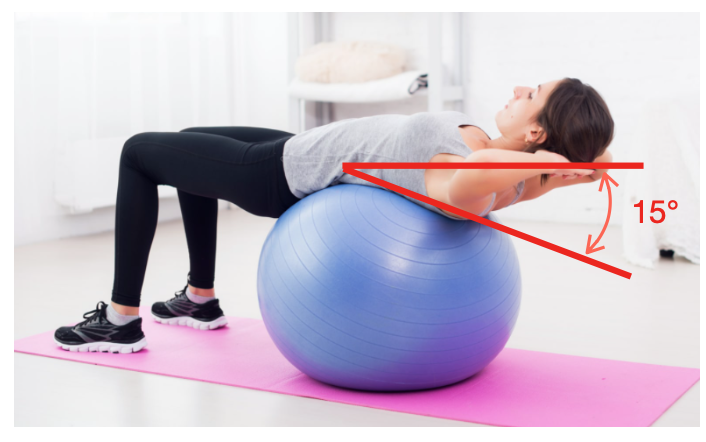
Un altro esempio di esercizio addominale che coinvolge molto i flessori dell'anca è qualsiasi esercizio in cui sollevi le gambe mentre sei in posizione supina (la posizione supina consiste nello sdraiarsi con la schiena a terra). Anche in questo caso si verifica un coinvolgimento maggiore dei flessori dell'anca rispetto agli addominali. Tale movimento è sconsigliato a maggior ragione se non si dispone di una buona forza addominale.Per concludere, dagli esempi che abbiamo visto, si può trarre come conseguenza che il modo migliore per isolare gli addominali è quello di ridurre il più possibile il coinvolgimento dei flessori dell'anca durante gli esercizi per l’addome. In questo modo, negli esercizi per gli addominali, si allenano principalmente gli addominali e si riduce la probabilità di infortuni alla schiena. Per quanto riguarda le differenze funzionali fra questi due muscoli è utile ricordare che lo psoas lavora con la flessione della coscia sul bacino mentre l’addome utilizza la flessione della colonna vertebrale sul bacino e del bacino sul torace.
Il retto dell’addome raggiunge la sua massima estensione muscolare con un’estensione del tronco di circa 15°. Tuttavia molti esercizi svolti a terra non permettono di estendere completamente gli addominali, per questo si può ricorrere a piegamenti eseguiti sulla palla svizzera (swiss ball o fit ball). Oltre al maggior range di movimento per mantenere l'equilibrio sulla palla vengono attivate molte più fibre muscolari e questo migliora inoltre l'equilibrio e l'attivazione neuromuscolare. La palla svizzera infatti è utilizzata in ambito riabilitativo.
Quando il retto dell’addome è sviluppato correttamente ecco allora che si vedono le classiche piastrelle scolpite (tecnicamente si chiamano epigastri). Ora, il motivo per cui gli “addominali” si vedono con più fatica nella parte bassa è la presenza di un maggior strato adiposo. Ecco quindi l’importanza di combinare un allenamento appropriato con una alimentazione/dieta corretta che faccia risaltare le le “piastrelle” più basse riducendo lo strato di grasso corrispondente.